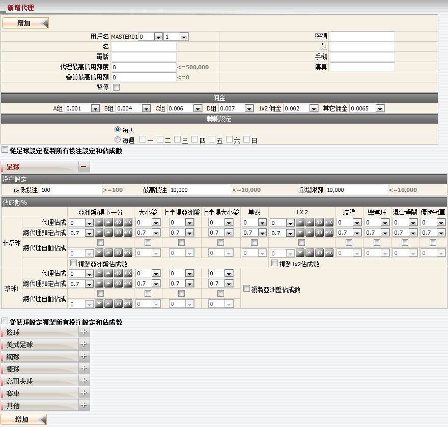
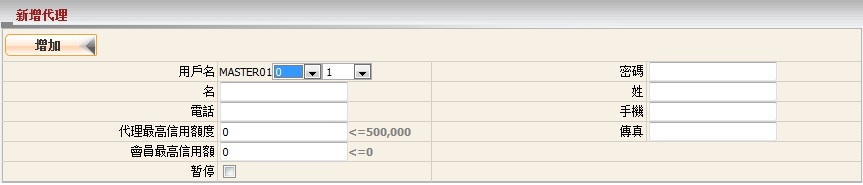
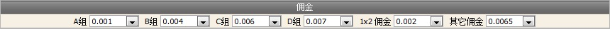
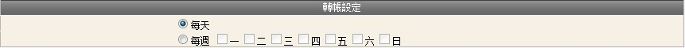
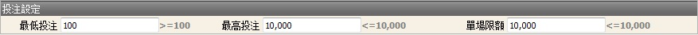
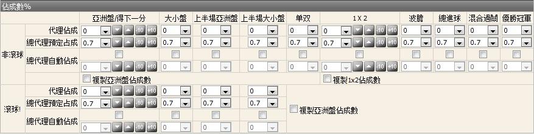
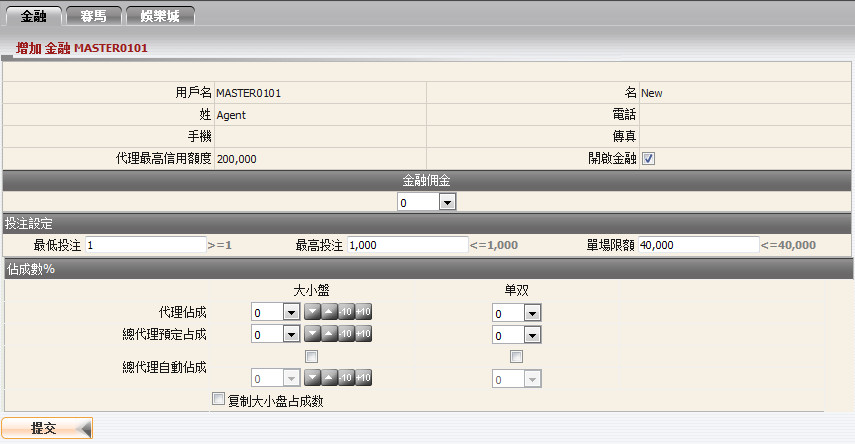
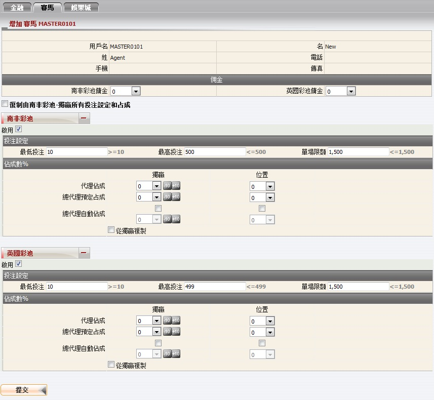
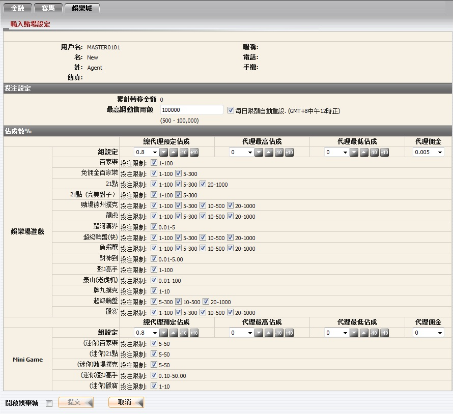

定義:
這個功能讓總代理新增一個會員, 然後編輯其佣金, 投注設定及對該代理的佔成數。
如何?
為了實現創建一個新的代理, 您必須填寫:代理资料登记
這是填寫代理的所需的資料。在這個形式中, 以下幾點值得關注:
這是為了設定代理佣金收入的百分比, 只需從下拉列表中選取一個值, 並記得代理佣金設定不能大於總代理的。

用詞註解:

投注設定
此設定適用於代理将限制最高及最低投注金額。必須注意的是最低投注 < 最高投注 < 單場限額。
用詞註解:
備註: 不同條目 /隊名將被視為另一場賽事。
例如, 以下賽事都將被視為不同的賽事或個別的項目。
a) "西班牙(中) -vs- 荷蘭" [2010 FIFA南非世界杯]。
b) "西班牙00:00-15:00 -vs- 荷蘭00:00-15:00" [2010 FIFA南非世界杯- 特定15分鐘大小]
c) "西班牙15:01-30:00 -vs- 荷蘭15:01-30:00" [2010 FIFA南非世界杯- 特定15分鐘大小]
即使聯賽名稱相同, 但由於不同的隊伍名稱, 上述條件仍然適用。
佔成數設定
這個設定將決定您最初的佔成數, 及代理基於個別運動類型及投注類型, 對他/她的會員的投注額所得到的最高佔成數,。
代理必須被啟動金融, 他/她才能擁有開設或拒絕金融投注的選項給他/她的會員。管理金融的規則設定將遵循體育博彩。

代理必須被啟動賽馬, 他/她才能擁有開設或拒絕賽馬投注的選項給他/她的會員。 管理賽馬的規則設定將遵循體育博彩。目前, 系統提供了南非彩池及英國彩池, 可投注類型: 獨贏, 位置。

代理必須被啟動娛樂城, 他/她才能擁有開設或拒絕娛樂城投注的選項給他/她的會員。 管理娛樂城的規則設定將遵循體育博彩, 此外還有一些其他的娛樂城條款及規則如下:
